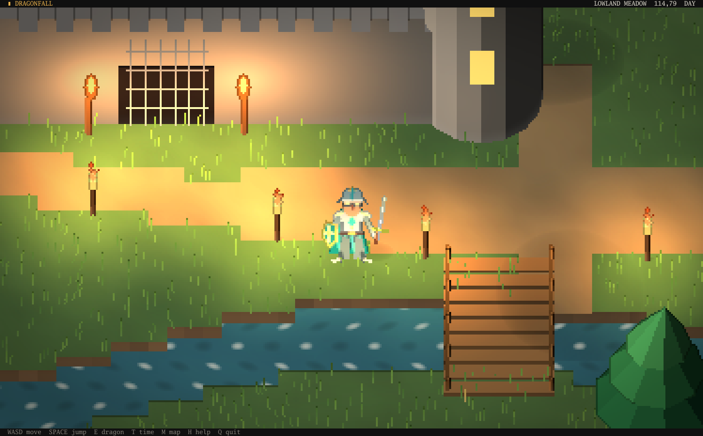
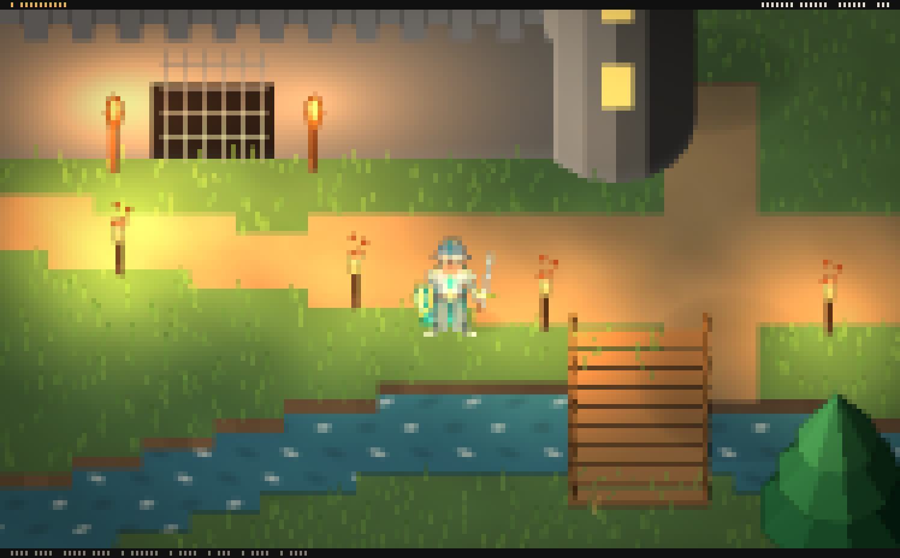

Rendering
How a scene becomes Braille characters in a terminal or pixels in a desktop window, and the settings that control the image.

Frame
- Projection. The game camera looks down at its pitch, 52 degrees in the Dragonfall sample. Ground depth shrinks with the sine of the pitch and height with its cosine, which produces the three quarter view. The camera is the scene's camera object; a scene without one shows No camera. See Cameras.
- Geometry. Components draw into a buffer of dots, 2 by 4 per terminal cell, sampling textures per dot. Each dot stores its color, surface normal, depth, world position and the object that drew it. Sprites are vertical planes, so a figure in front of a wall covers it and one behind it is hidden, dot by dot. Strokes of the Braille brush are applied afterwards.
- Lighting. Shadows are cast onto the ground, then every dot is lit by the sun, the sky and the scene's lights.
- Post processing. Water glints, distance fog, an outline on depth edges, and a color grade with exposure, contrast, saturation, warmth and vignette.
- Braille. Each cell has eight dot colors, but a terminal shows two colors per cell. The encoder divides the eight dots into two groups and writes the matching Braille character with one foreground and one background color. In a window, the
pixelspass takes its place and every dot keeps its own color, see Window output. - Cells. Text and glyph sprites are written over the result as whole characters.
Lights
| Type | Illuminates |
|---|---|
| Point | Everything within its radius, softening toward the edge. |
| Spot | A cone within its radius, aimed by the object's rotation; without rotation it points straight down. angle is the width of the cone. |
| Directional | The whole scene from one direction, replacing the environment's sun while it is enabled; the object's rotation aims it. |
Ambient light from the sky and the ground, and the sun when no directional light is enabled, come from the scene's environment. Lights are components and are changed from scripts like any other component: find("lamp"):component("light").intensity = 0.
Terminal output

The output is text: one Braille character per cell with a 24 bit foreground and background color, written with standard escape codes. No other output reaches the terminal, so games run in any terminal with 24 bit color, including over SSH. The editor's view shows exactly these cells.
Window output

A game whose Display is set to Window in Project Settings opens in a desktop window instead of the terminal. The scene, lighting and post processing are the same; only the last steps differ:
- The
braillepass is turned off and thepixelspass runs in its place. No dots are merged into characters, so every dot keeps its own color: the image has eight colors where a terminal cell shows two. - The window shows each dot as a square of screen pixels. The pixel scale is how many screen pixels wide each dot is; with a scale of 0 the window picks the whole number that shows about 480 dots across. A larger window shows more of the world at the same scale, as a larger terminal does.
- Text and glyph sprites are drawn at screen resolution over the dots, each character in the cell it was written to, so the layout of a HUD matches the terminal. A cell is still 2 by 4 dots, so text is small at low pixel scales. A label without a background panel leaves the scene visible behind its letters; a character the window's font does not contain is drawn as a small square.
- Key releases are reported, so several keys can be held at once, see
key_downin the Lua API.
The dots are rendered by the processor, as in the terminal, so the frame time grows with the number of dots: 480 by 270 dots costs about as much as a terminal of 240 by 68 cells. F11 or Alt+Enter switches between the window and fullscreen while playing. The editor's Game view keeps showing Braille cells for both displays.
Passes
| Pass | Stage | Settings | Function |
|---|---|---|---|
clear | geometry | Fills the buffer with the sky. | |
scene | geometry | Draws every visible component. | |
paint | geometry | Applies Braille brush strokes. | |
shadows | lighting | strength | Casts shadows onto the ground. |
lighting | lighting | Lights every dot. | |
water | post | strength, speed | Animates glints on water. |
fog | post | density, start, end, height | Fades distant and low areas into the fog color. |
outline | post | threshold, strength | Darkens the near side of depth edges. |
grade | post | exposure, contrast, saturation, warmth, vignette | Final color adjustment. |
braille | resolve | mode, calm | Encodes dots into characters, see Output modes. |
pixels | resolve | Present only in a window, in place of braille: leaves the dots to the window, see Window output. | |
cells | overlay | Writes text and glyph sprites. |
The Pipeline tab in the editor switches passes on and off, reorders them within their stage, edits their settings and shows the time each takes. Scripts reach the same passes through pipeline, see the Lua API. Turning off braille leaves only text; fog, outline and grade can be turned off to compare their effect.
The editor adds three passes that appear only in the Scene view: grid, the ground grid; colliders, the collider outlines; and cameraview, the outline of the game camera's view.
Output modes
The mode setting of the braille pass selects how dots become characters:
| Mode | Output |
|---|---|
braille | The default. Each cell shows a Braille character: 2 by 4 dots in a foreground color over a background color. Highest detail; the result depends on how the terminal's font draws Braille characters. |
blocks | Each cell shows the upper half block character ▀: the average color of its top four dots above the average of its bottom four. Half the vertical detail and no dot pattern, but solid and independent of the font. |

blocks mode.Players select block mode with --blocks or the environment variable ASCDII_BLOCKS=1; see CLI reference. Scripts switch it with pipeline.pass("braille").mode = "blocks", and the editor's Pipeline tab previews it. Text and glyph sprites are written as characters in both modes.
Image quality
Braille images become restless when small color differences turn into random dot patterns. The following keep an image calm:
- Smooth sources. Terrain blends its colors across tile corners, so the encoder receives gradients rather than hard steps.
- The
calmsetting of thebraillepass. Cells whose two colors are closer than this value are drawn as one flat color, so only real edges become dots. High values turn the image into flat blocks. - Low contrast detail. Grass, grain and other fine texture should stay close to the color beneath it; bright, saturated speckles read as noise.
- Slow motion of thin parts. A one dot wide element that moves quickly flickers.
- Supersampled sprites. A sprite whose art is finer than the dots it covers can be drawn supersampled: its parts are rasterized at several times the resolution, and each dot takes the share of art it covers and its average color. The Dragonfall knight and dragon use this; Go components enable it with
Sprite.Smooth, see Go API.
cols and rows of its manifest; a terminal with a smaller font shows more cells. In the editor, the cell size buttons of the view toolbar set the resolution, see View toolbar.Time of day
With auto enabled, the environment derives the sun's direction and color, the ambient light, the sky and the fog from hour. At night a dim, cool moon keeps scenes readable, and lights determine the mood.